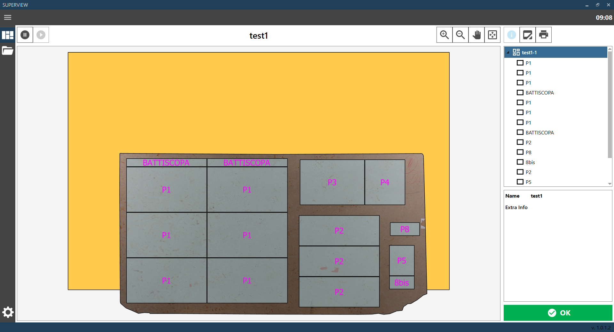
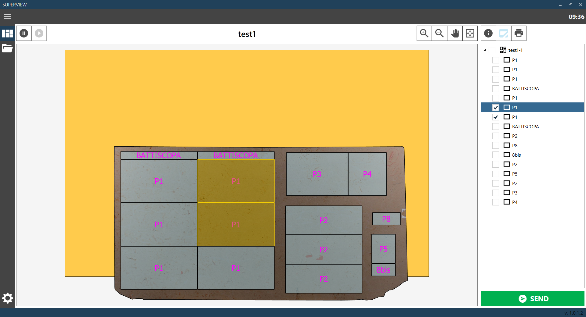
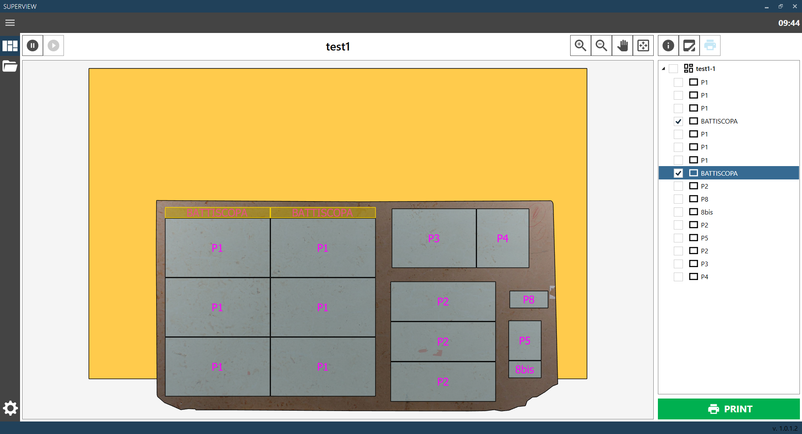

Manuale software Superview
Una pubblicazione di Donatoni Macchine S.r.l.
Versione Software: 1.0.1.0
Versione Manuale: 1.0
Data: 19/02/2026
Pagina che permette di visualizzare la configurazione di taglio attualmente presente nella zona di scarico.

E’ presente una finestra di visualizzazione dove è possibile visualizzare il banco con sopra le lastre eseguite con i relativi pezzi. A destra è presente la lista di lastre e pezzi visualizzati, e sotto un pannello con le informazioni dell’oggetto selezionato. E’ possibile selezionare una lastra o un pezzo facendo click direttamente sull’oggetto desiderato nella finestra di visualizzazione, oppure sul nome dell’oggetto nella lista a destra.
Aumenta zoom | |
Diminuisci zoom | |
Modalità trascinamento | |
Reimposta vista predefinita | |
Arresta ricezione | |
Avvia ricezione | |
 | Visualizza informazioni |
Seleziona pezzi rotti | |
Stampa etichette | |
 | Conferma |
Questa modalità della pagina Configurazione Corrente permette di selezionare uno o più pezzi e segnalarli come rotti.

La segnalazione arriverà al software Parametrix opportunamente configurato, che permetterà di reinserire i pezzi per una nuova esecuzione.
Questa funzione è opzionale e deve essere impostata correttamente, oppure disabilitata.
È possibile selezionare i pezzi da segnalare direttamente dalla finestra di visualizzazione, oppure selezionando la casella del pezzo nella lista a destra.
Selezionando la casella di una lastra verranno selezionati tutti i pezzi di quella lastra.
La segnalazione di pezzi rotti può essere eseguita una sola volta per la configurazione di taglio, e una volta inviata non può essere modificata.
Segnala pezzi rotti |
Questa modalità della pagina Configurazione Corrente permette di selezionare uno o più pezzi e stamparne le etichette.

Questa funzione è opzionale e deve essere opportunamente configurata, oppure disabilitata. È possibile selezionare i pezzi per cui stampare le etichette direttamente dalla finestra di visualizzazione, oppure selezionando la casella del pezzo nella lista a destra. Selezionando la casella di una lastra verranno selezionati tutti i pezzi di quella lastra.
Stampa etichette |
Questa pagina consente di visualizzare la lista di configurazioni di taglio precedenti e riaprirle.

Per selezionare una configurazione di taglio precedente basta selezionarla dalla lista di sinistra.